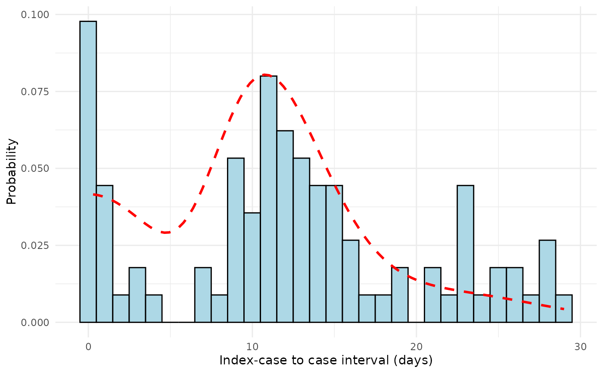

Creates a diagnostic plot showing the fitted serial interval mixture distribution overlaid on a histogram of observed index case-to-case (ICC) intervals from outbreak data.
Arguments
- dat
numeric vector; the index case-to-case (ICC) intervals in days. These represent the time differences between symptom onset in the index case (case with earliest symptom onset) and each other case in the outbreak
- mean
numeric; the estimated mean of the serial interval distribution in days, typically obtained from
si_estim()- sd
numeric; the estimated standard deviation of the serial interval distribution in days, typically obtained from
si_estim()- weights
numeric vector; the estimated weights for different transmission route components. Length and interpretation depends on distribution:
Normal distribution: 4 weights corresponding to aggregated transmission routes (co-primary, primary-secondary, primary-tertiary, primary-quaternary)
Gamma distribution: 3 weights for the reduced component set
- dist
character; the distribution family used for serial interval estimation. Must be either "normal" (default) or "gamma". Should match the distribution used in the original
si_estim()call- scaling_factor
numeric; multiplicative factor to adjust the height of the fitted density curve relative to the histogram. Values > 1 make the curve higher, values < 1 make it lower. Defaults to 1. Useful when histogram and density have different scales.
Value
A ggplot2 object that can be further customized or displayed.
The plot includes appropriate axis labels, legend, and styling for
publication-quality figures
Details
The function displays:
Histogram: Observed ICC intervals binned by day, representing the empirical distribution of time differences between symptom onset in the index case and all other cases in the outbreak
Fitted curve: The estimated mixture distribution combining different transmission routes (co-primary, primary-secondary, primary-tertiary, and primary-quaternary), weighted according to their estimated probabilities
Reference line: For normal distributions, a dashed vertical line indicates the estimated mean serial interval
References
Vink MA, Bootsma MCJ, Wallinga J (2014). Serial intervals of respiratory infectious diseases: A systematic review and analysis. American Journal of Epidemiology, 180(9), 865-875.
Examples
# Example 1: Visualize fit for simulated outbreak data
set.seed(123)
# Simulate ICC intervals from mixed distribution
icc_data <- c(
rnorm(20, mean = 0, sd = 2), # Co-primary cases
rnorm(50, mean = 12, sd = 3), # Primary-secondary cases
rnorm(20, mean = 24, sd = 4) # Primary-tertiary cases
)
icc_data <- round(pmax(icc_data, 0)) # Ensure non-negative
# Plot with estimated parameters
plot_si_fit(
dat = icc_data,
mean = 12.5,
sd = 3.2,
weights = c(0.2, 0.6, 0.15, 0.05),
dist = "normal"
)
# Example 2: Using gamma distribution
plot_si_fit(
dat = icc_data,
mean = 12.0,
sd = 3.5,
weights = c(0.25, 0.65, 0.10),
dist = "gamma",
scaling_factor = 0.8
)
#> Warning: Removed 1 row containing missing values or values outside the scale range
#> (`geom_function()`).
